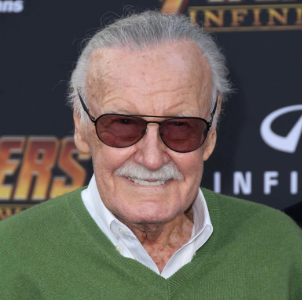

Creditos
In October 2014, Marvel Studios announced a two-part sequel of Avengers: Age of Ultron (2015) entitled Avengers: Infinity War. Part 1 was scheduled to be released on May 4, 2018, and Part 2 was scheduled for May 3, 2019.[77] Marvel's plan was to film both parts of Infinity War back-to-back.[78] Anthony and Joe Russo were hired to direct the films in April 2015.[79] The next month, Christopher Markus and Stephen McFeely signed on to write the screenplays for both parts of the film.[80] Producer Kevin Feige said they would be "two distinct" projects with shared elements, not one story split across two films.[81] The Russos decided to rename them to remove this misconception in May 2016,[82] and Marvel left the second film untitled that July.[83] Feige and the Russo brothers indicated that the title was being withheld to avoid giving away plot details.[84][85] Principal photography began on August 10, 2017,[86] under the working title Mary Lou 2[87] at Pinewood Atlanta Studios in Fayette County, Georgia, with Trent Opaloch the director of photography.[88][89] The film and Infinity War were shot with ARRI Alexa IMAX 2D cameras, the first time a Hollywood feature film was shot entirely with IMAX digital cameras.[90] Filming was done that month in the Gulch area of downtown Atlanta, near the Five Points MARTA station, and in Piedmont Park.[91] Feige said that the films were originally scheduled to be filmed simultaneously but were ultimately shot back-to-back: "It became too complicated to cross-board them like that, and we found ourselves—again, something would always pay the price. We wanted to be able to focus and shoot one movie and then focus and shoot another movie."[92] Anthony Russo originally felt that it made more sense to shoot the films simultaneously for financial and logistical reasons (including the large number of cast members),[93] and had suggested that "some days we'll be shooting the first movie and some days we'll be shooting the second movie. Just jumping back and forth."[88] The 2013 Asgard scenes were shot at Durham Cathedral in Durham, England during production of Infinity War in early May 2017.[94][95] Production wrapped on January 11, 2018,[96] although additional filming took place in New York's Dutchess and Ulster counties in June 2018.[97] Re-shoots began by September 7, 2018,[98] and ended on October 12.[99] More re-shoots were done in January 2019.[100] Location shooting also took place in St Abbs, Scotland, which doubled for New Asgard in Norway.[101] Evans and Hemsworth earned $15 million each for the film.[102] The film's official title, Avengers: Endgame, and final U.S. release date of April 26, 2019, were revealed with the film's first trailer in December 2018.[103] Visual effects for the film were created by Industrial Light & Magic, Weta Digital, DNEG, Framestore, Cinesite, Digital Domain, Rise, Lola VFX, Cantina Creative, Capital T, Technicolor VFX, and Territory Studio.[104] Like previous MCU films, Lola worked on the de-aging scenes; the film has 200 de-aging and aging shots.[105] Downey, Evans, Ruffalo, Hemsworth, Johansson, and Renner were de-aged to their 2012 appearances for scenes recreated from The Avengers (2012).[106] Michael Douglas, John Slattery, and Stan Lee were also de-aged for the 1970 New Jersey scene,[73][107] and Douglas's appearance in The Streets of San Francisco was referenced.[108] Lola aged Evans for the final scene, where he is an elderly man, with makeup and a stand-in.[106] Jeffrey Ford and Matthew Schmidt were the film's editors.[109]
